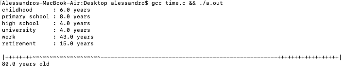

Thu 18 Feb 2021
Reading time: (~ mins)
I recently came across Death Progress Bar by Devine Lu Linvega. It reminded me of a little project I made late last year to get a better perspective of what felt like a wasted year due to COVID. Both Devine's short post and this one are to encourage you to be more explicitly aware of your time spent alive and maybe to realign your priorities with this hard knowledge.
My death machine plots your life and let's you quickly see how much time you spent doing things that you enjoyed versus the lifestyle that was designed for you.
The average Canadian can expect to live to ~80 years old, but with at least 10 of those last years to be spent "severely disabled" (due to age). That gives us more like 70 "actionable" years and even then the true inflection point is around 65 years of age, but let's stay positive.
Here is the timeline for the average life lived:
I'll let you draw your own conclusions.
Here is my current time plot:
The code is included below so you can update events and events_length with your own values:
#include <stdio.h>
#include <stdlib.h>
#include <string.h>
#include <sys/ioctl.h>
#include <unistd.h>
int is_school(const char *str) {
return (strstr(str, "school") != NULL ||
strstr(str, "uni") != NULL ||
strstr(str, "college") != NULL);
}
char *events[] = {
"childhood",
"primary school",
"high school",
"university",
"work",
"retirement"};
float events_length[] = {
6,
8,
4,
4,
43,
15};
int terminal_cols() {
struct winsize w;
ioctl(STDOUT_FILENO, TIOCGWINSZ, &w);
return w.ws_col;
}
int main(int argc, char *argv[]) {
int age = argc > 1 ? atoi(argv[1]) : 80;
int count = 0;
float sum = 0;
const int MAX_CHARS = terminal_cols();
int length = (int)(sizeof(events_length) / sizeof(float));
float expand = (float)(MAX_CHARS - length) / age;
for(int i = 0; i < length; ++i) {
printf("%-15s: %.1f %s\n", events[i],
events_length[i],
events_length[i] == 1 ? "year" : "years");
}
printf("\n|");
for(int i = 0; i < length; ++i) {
for(float j = events_length[i] * expand; j >= 0; --j) {
if (is_school(events[i]) != 0) {
printf("~");
} else if (strstr(events[i], "work") != NULL) {
printf("-");
} else {
printf("+");
}
++count;
}
sum += events_length[i];
}
int time_left = MAX_CHARS - 3;
while (count < time_left) {
++count;
printf(" ");
}
printf("|\n%.1f years old\n", sum);
return 0;
}
Enjoy, and remember to enjoy life too. :)